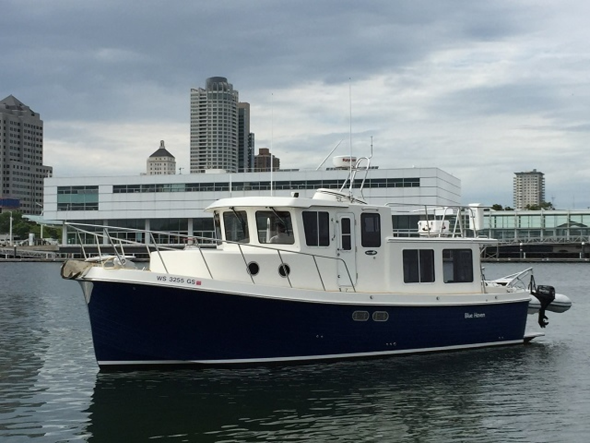

B-Scout Boat Guide · AMTG-34
American Tug 34
2001–2011
The American Tug 34 is a Lynn Senour-influenced raised-pilothouse semi-displacement cruiser built for efficient coastal passagemaking. It combines a single-diesel shaft layout, protected running gear, wide working decks and couple-oriented accommodations with substantially more beam and displacement than trailerable tug-style cruisers.

- Length
- 34.42 ft
- Beam
- 13.25 ft
- Draft
- 3.42 ft
- Hull behaviour
- Semi-Displacement
- Fuel
- Diesel
- Propulsion
- Shaft
- Engine configuration
- Single Cummins diesel inboard
- Boat family
- Trawler
- Construction
- Fiberglass
Best for
- Couples planning extended coastal or Great Loop cruising
- Owners prioritizing pilothouse visibility, tankage and robust deck access
- Buyers comfortable with conventional yacht-scale storage and maintenance
Trade-offs
- Beam and displacement require conventional marina, haul-out and storage infrastructure
- Single engine provides no second-engine propulsion redundancy
- More complex and costly to own than trailerable pocket cruisers
Known concerns
- No model-specific concern has been promoted to B-Scout’s evidence threshold. This does not mean the model has no age-, condition- or hull-specific risks.
Inspection focus
- Confirm exact 34/365 naming and model year from HIN and factory records
- Inspect engine, cooling, exhaust, shaft, rudder and full-length keel/running gear
- Inspect pilothouse doors, windows, deck hardware and cored structures for leakage
- Inspect fuel, water, waste, generator and electrical systems and verify tank condition
Continue researching
Related boat models
American Tug 365
36.5 ft · Semi-Displacement
American Tug 395
41.5 ft · Semi-Displacement
Californian 34 LRC Long Range Cruiser
34.5 ft · Semi-Displacement
DeFever 34 Passagemaker Passagemaker
34.33 ft · Displacement
Back Cove 30 Downeast Cruiser
34.17 ft · Semi-Displacement
Mainship 34 MKI
34 ft · Semi-Displacement
About this record
B-Scout preserves uncertainty: missing information remains unknown rather than being treated as a negative. Specifications and guidance describe the model record; individual boats can differ by year, equipment, refit and condition.